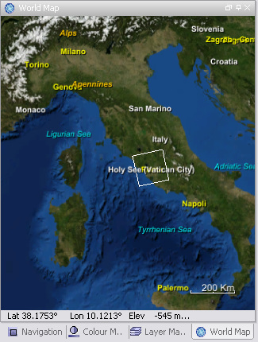

| The World Map | |
When working with satellite data, it is often not obvious at first sight which region of the world is covered by the data product. To facilitate finding the location of the product on the globe, DAT has a built-in world map that shows the projection of the product boundaries on a virtual globe.
To invoke the World Map simply click on the globe icon in the main toolbar or select World Map from the 'View' menu. This will open a window similar to the one below.

The World Map is a flat Earth representation of the 3D WorldWind View.